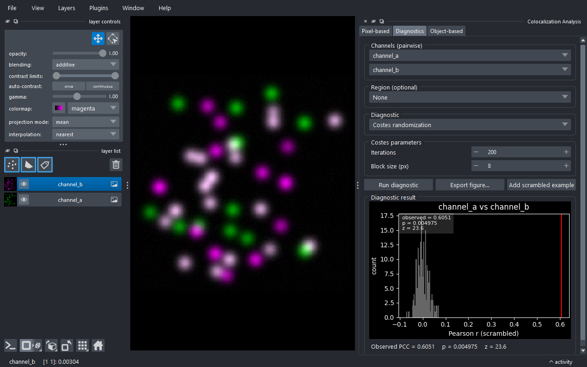
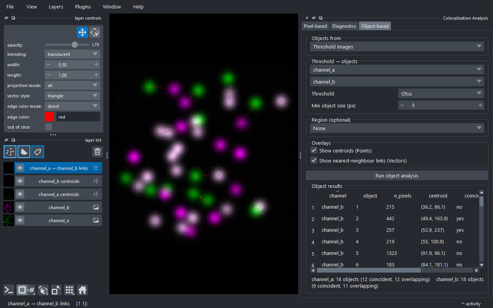

Usage guide¶
This page walks through the Colocalization Analysis dock widget and its three tabs.
Documentation index: Home · Usage · Metrics · Python API
Opening the widget¶
In napari: Plugins → Colocalization Analysis. The widget docks on the
right by default. To follow along without your own data, load a sample:
File → Open Sample → napari-colocalization → Colocalization sample (2D).
A 3D synthetic version is also provided, plus CBS006RBM, a two-channel
benchmark image (~50 % colocalization) downloaded once and cached under
~/.cache/napari-colocalization/ from the
Colocalization Benchmark Source.

The widget is split into three tabs, each self-contained (its own channel selectors and Run button):
- Intensity correlation - the per-region metric table and cytofluorogram.
- Diagnostics - single-pair diagnostic plots.
- Object-based - object-level coincidence and overlap.
Intensity correlation tab¶
Mode¶
Choose how channels are supplied:
- Pairwise (default) - pick two separate image layers (e.g.
channel_aandchannel_b). - All-to-all - pick a single image layer that has a channel axis (e.g.
shape
(C, Y, X)); the plugin computes every channel pair(i, j)withi < j.
Channels¶
In pairwise mode, two layer combos labelled Image A and Image B, auto-populated from the viewer's image layers. With at least two images present, A and B default to different layers. Both must have the same shape.
A Per Z-slice checkbox with a Z axis spinbox analyses each plane of a
3D stack separately (one result row per slice, tagged in the slice column)
instead of the whole volume; it requires a 3D image.
In all-to-all mode, a single Image stack combo plus a Channel axis
spinbox (bounded by the layer's .ndim; the plugin guesses a sensible
default). Channel names are derived from the layer name plus the index along
the channel axis (e.g. stack_0, stack_1).
Region (optional)¶
A dropdown listing every Shapes and Labels layer, with None at the top:
- None (default) - analyse the whole image (one row per channel pair,
region = 0). - A Shapes layer - each shape is its own region; region IDs match the 0-based shape indices napari shows on hover.
- A Labels layer - each non-zero label is its own region, preserving the label values.
The dropdown updates as you add, remove or rename Shapes/Labels layers; image layers are excluded. The region's spatial shape must match the channels'.
Correlation metrics¶
Five checkboxes: Pearson, Spearman, Li ICQ, Overlap (r, k1, k2) and Manders. Only Spearman is on by default (the most outlier-robust). Pick any subset; unrequested metrics are blank in the table. See metrics.md for what each one means.
Manders threshold¶
Visible only when Manders is checked - a Method dropdown:
- Costes (auto) (default) - the iterative Costes threshold (orthogonal regression + bisection, matched to Fiji Coloc 2).
- Otsu / Li / Triangle / Yen / Mean / IsoData - a per-channel
histogram threshold (
skimage.filters), giving the thresholded M1/M2. - Manual - reveals T_a / T_b spinboxes for explicit values.
In all-to-all mode the chosen method applies to every channel pair.
Run and results¶
Run computes the metrics on a background thread (the UI stays responsive; the button disables while running). The Results group then appears.
The table has one row per (channel pair, region[, slice]): region,
slice, channel_a, channel_b, n_pixels, the metric columns (pcc +
pcc_pvalue, srcc + srcc_pvalue, icq, overlap/k1/k2, m1/m2)
and threshold_a/threshold_b. Click a header to sort; multi-select with
Ctrl/Shift-click. If a region's metric can't be computed (too few pixels,
a constant or empty channel) its cell is left blank and a note below the table
summarises how many rows were affected and why.
The cytofluorogram below is a 2D hexbin density plot of the two
channels' intensities for the selected row, with the axes labelled by the
channel names. Red lines mark the Manders thresholds and a cyan dashed line
shows the Costes regression when those were computed; metric values are
annotated in the corner. Fixed plot axes locks the axes to
[0, channel max] so plots are comparable across regions, slices and images.
Selecting rows highlights the matching regions in the viewer (a Shapes
outline, or show_selected_label for a single Labels row).
Three actions sit below: Export CSV… (the table), Export figure… (the cytofluorogram, at a chosen size/DPI and format), and Add coloc mask layer (a Labels layer of the pixels above both Manders thresholds for the selected row).
Diagnostics tab¶
For a single channel pair (its own Image A/Image B and optional Region), the Diagnostic dropdown picks one plot:
- Costes randomization - the significance test: channel B is block- scrambled many times to build a null PCC distribution, plotted as a histogram with the observed PCC, a p-value and a z-score. Parameters: Iterations and Block size. 2D or 3D.
- Van Steensel CCF - Pearson's r as channel B is shifted across Max shift pixels; a peak at 0 indicates colocalization.
- Li ICA - the intensity-correlation-analysis scatter (intensity vs covariance product) for each channel, with the ICQ value.

Run diagnostic renders the plot and a one-line summary. Export figure… saves it. For Costes randomization, Add scrambled example adds one block-scrambled copy of Image B to the viewer as an Image layer.
Object-based tab¶
Compares segmented objects between two channels. Objects from chooses the source:
- Threshold images (default) - pick Image A/Image B, a Threshold method (Otsu/Li/…) and a Min object size; the plugin thresholds and connected-component-labels each channel. An optional Region restricts detection.
- Labels layers - pick two existing Labels layers (e.g. from cellpose/StarDist or manual painting).
Overlays toggles Show centroids (Points) and Show nearest-neighbour links (Vectors).

Run object analysis fills the Object results table - one row per
object (channel, object, n_pixels, centroid, coincident,
overlap) - with a per-channel summary below. Coincident means the
object's centroid falls inside an object of the other channel; overlap
means its pixels touch one. If overlays are enabled, object centroids are
added as Points layers (coloured by each channel's colormap) and the
nearest-neighbour links as a Vectors layer; re-running replaces them.